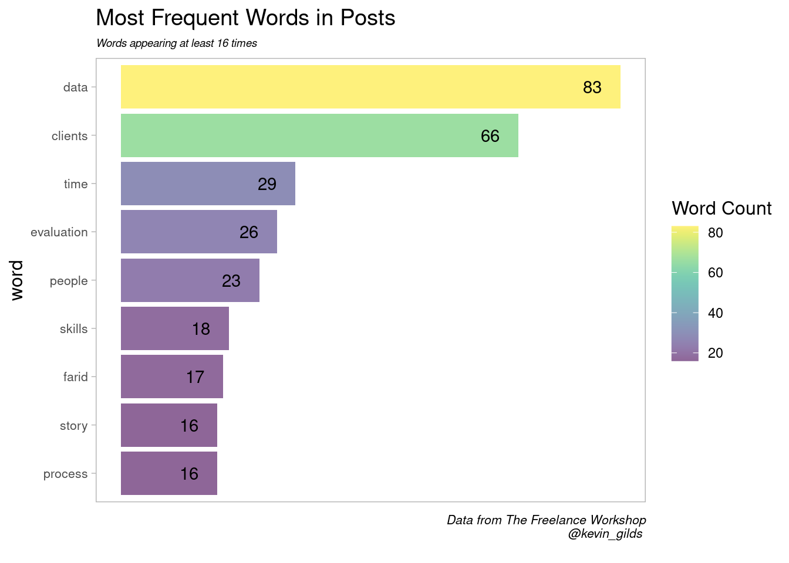
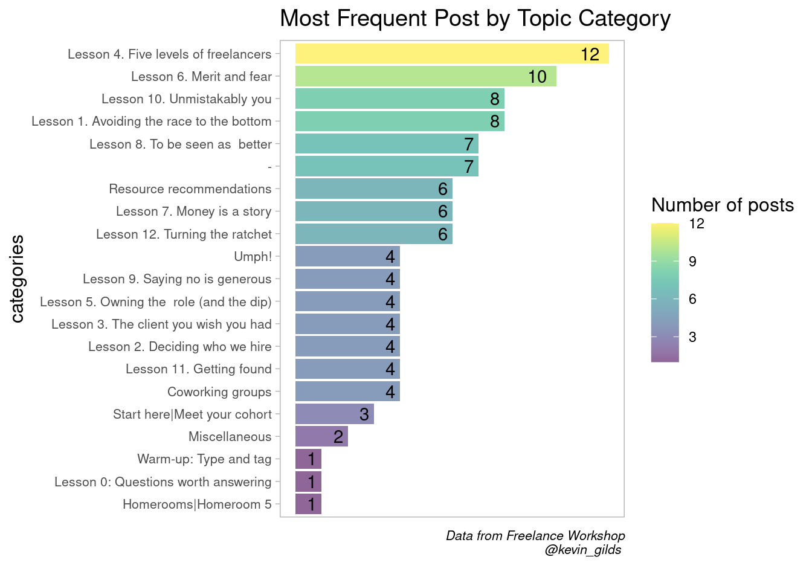

How often do you formally analyze all the comments you receive. Below I will show you some ways to process text data for additional analysis.
Below is a simple analysis of my post from the Freelance Workshop. The workshop consisted of viewing a video by Seth Godin, and responding to question prompts and tagging . The key was writing your response and tagging other people to receive feedback and vice-versa.
At the end of the workshop, participants were able to download their posts into a csv file. I thought it may be good fun to analyze the data.
I was surprised I only had 106 posts; it felt like much more and I am not sure had the capacity to write more.
Load Required packages
library(dplyr)
library(ggplot2)
library(tidytext)
library(forcats)
library(viridis)
library(gt)Below is a display of the first six rows and selected columns
post %>%
dplyr::select(created_at, like_count, post) %>%
head() %>%
gt::gt()| created_at | like_count | post |
|---|---|---|
| 2020-03-30 20:56:58 | 1 | For kids: Adventures of Huckleberry Finn: Learn to see the world from many perspectives and learn empathy. For adults: Lila An Inquiry Into Morals: Provides a framework for understanding life and change. For people at work: The War of Art: This book taught me how to work. |
| 2020-03-31 01:21:54 | 1 | Thank you for the welcome @traviswilson . Good question, Finn and Lilla are about trying to understand people and society. |
| 2020-03-31 20:37:27 | 4 | Hello! My name is Kevin Gilds residing in Lakeland, Florida--between Tampa and Orlando. I am here to learn how to take the next steps. I fell into my first freelancing gig and would love to do more. |
| 2020-03-31 21:12:07 | 2 | Hi Razlan, I try to get the tough stuff done early while they are still asleep. We are fortunate that we have the flexibility to alternate care giving duties. The kids are also of the age where they are able to play together most of the time well enough. Hang in there! |
| 2020-03-31 23:53:03 | 0 | This is a great one; I let my former boss read and has not returned yet.... :upside_down_face: |
| 2020-04-01 20:31:17 | 3 | I am a huge fan of this podcast and blogging platform It is from the creators of Basecamp. The podcast: https://rework.fm/ The blogging/article platform https://m.signalvnoise.com/ |
I will use the tidytext package to break down the words in the post column and put it in a tidy format for analysis.
Lets take a peak
post %>%
tidytext::unnest_tokens(word, post)%>%
dplyr::count(word) %>% # count number of words produces n
dplyr::arrange(desc(n)) %>%
dplyr::filter(n >=150) %>%
gt::gt() %>%
tab_header(
title = md("**Kevin's Top Words**"),
subtitle = md("*The Freelance Workshop*")
)| Kevin's Top Words | |
| The Freelance Workshop | |
| word | n |
|---|---|
| to | 415 |
| the | 344 |
| i | 342 |
| and | 237 |
| a | 209 |
| you | 202 |
| is | 173 |
| of | 161 |
| this | 150 |
Not very interesting, but we can clean this up! The tidytext package has loaded stop words to help us remove common words, and I am going to add words specific to the workshop.
Complete an anti-join to remove standard stop words and add your own custom words you wish to dismiss
Below are my custom words:
word <- c("topic","quote", "post", "1", "https", "hey", "2", "homeroom5", "5", "3", "6", "_kevin_", "_imposter_", "34974", "you’re")
workshop_stop <- data.frame(word)Below we have a script that adds some additional data processing to extract insights from the words. I added a case_when statement to deal with similiar words and the anti-join statement to remove non insightful words
word_count <- post %>%
tidytext::unnest_tokens(word, post ) %>% #breakdown each word of the character vector
dplyr::mutate(word = case_when( #make
word == "client" ~ "clients",
TRUE ~(word)
)) %>%
dplyr::anti_join(stop_words) %>% #remove standard common words
dplyr::anti_join(workshop_stop) %>% #remove words specifc to the workshop that are not of valle
dplyr::count(word) %>% # count number of words produces n
dplyr::arrange(desc(n)) %>%
dplyr::filter(n >=16) %>%
gt::gt () %>%
tab_header(
title = md("**Kevin's Top Words**"),
subtitle = md("*The Freelance Workshop*")
)
word_count| Kevin's Top Words | |
| The Freelance Workshop | |
| word | n |
|---|---|
| data | 83 |
| clients | 66 |
| time | 29 |
| evaluation | 26 |
| people | 23 |
| skills | 18 |
| farid | 17 |
| process | 16 |
| story | 16 |
Now we are in position to graph the data. Below is a graph of my most frequent words with a mimimum of 16.

What were the most frequent post by category?

This has been a basic introduction to text mining with R. It is possible to break down comments into their components. The most suprising word that stands out to me is time. It makes me want to re-read my post and understand the context better.